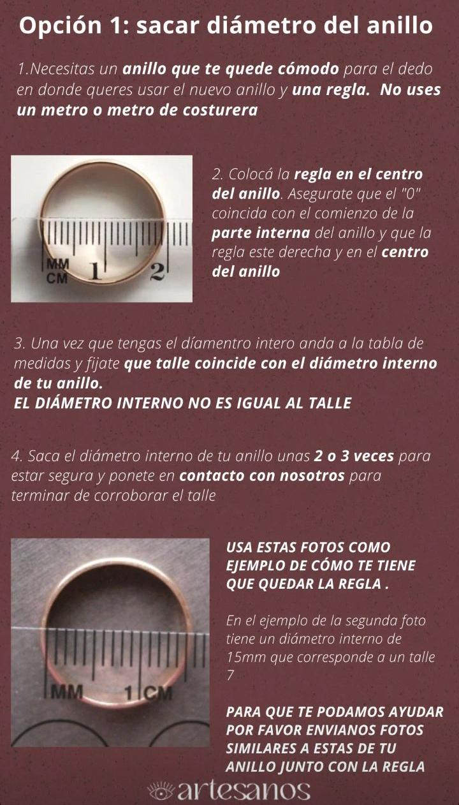
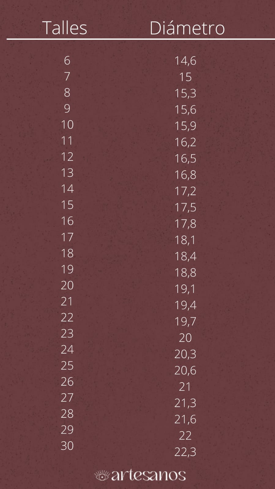
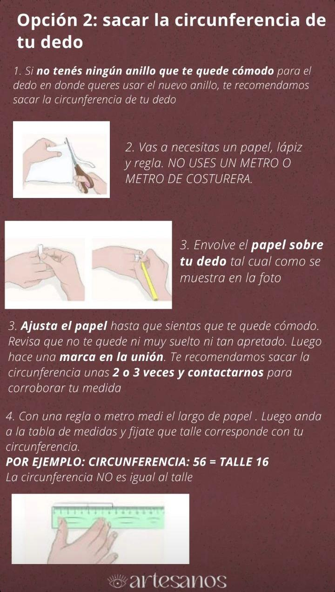
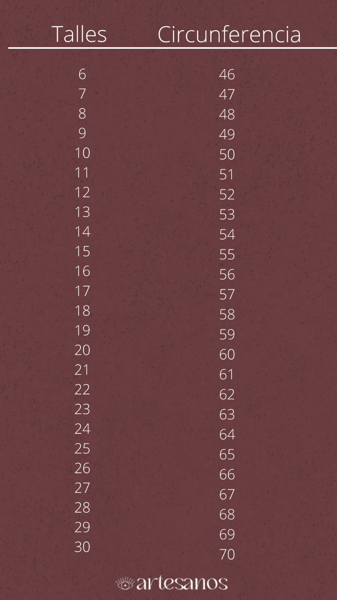

¿Como saber el talle de tu dedo para un anillo?
A continuacion te mostramos dos tecnicas para que puedas sacar el talle de tu anillo. La primera opcion te sera util si ya contas con un anillo para el dedo en donde queres usar el nuevo anillo y la segunda explicacion te servira si es la primera vez que vas a usar un anillo o no tenes un anillo para ese dedo



